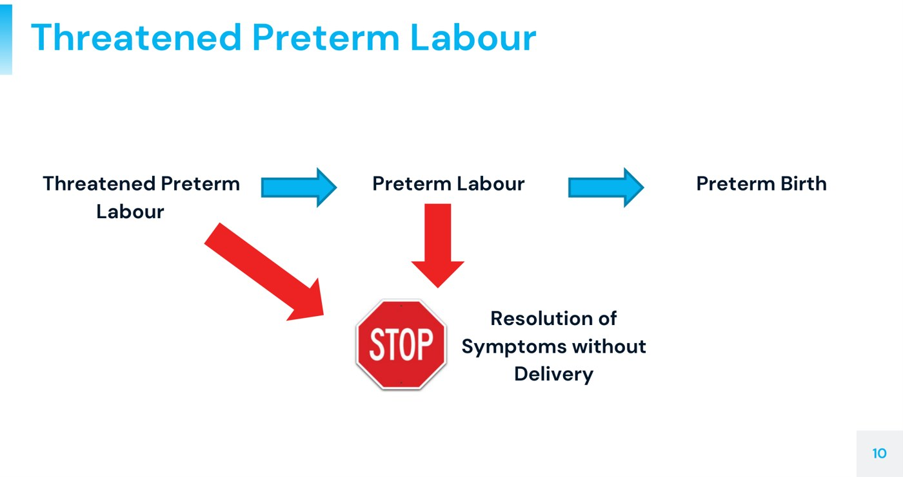
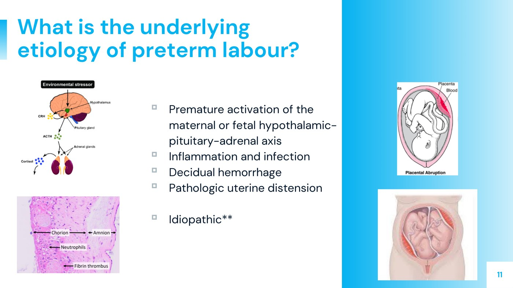

Approach to Preterm Labour
- Term starts at 37+0. Threatened preterm labour = labour symptoms, cervix may or may not change. Preterm labour = contractions plus cervical change. Preterm birth = delivery before 37 weeks, spontaneous or induced.
- The harm is gestational-age dependent: the earlier the birth, the higher the risk of death, RDS, IVH, NEC, retinopathy, sepsis and cerebral palsy.
- Top of the risk list: a previous spontaneous preterm birth. Also multiples, cone biopsy, a short cervix, cervicitis/BV, smoking and extremes of age.
- Four tools: tocolysis buys 48 h · betamethasone before 34 wk (2 doses, 24 h apart) · magnesium sulfate before 34 wk when birth is imminent · penicillin if GBS is positive or unknown.
- PPROM = membranes rupture before 37 weeks. Confirm it with pooling, nitrazine and ferning. Before 32 weeks, 50% deliver within 48 h and 75% within a week. Latency antibiotics buy time, unless there is infection, abruption or fetal distress.
Learning Objectives
- Define preterm labour, preterm birth, and preterm prelabour rupture of membranes.
- Describe the risk factors for and presentation of patients presenting with threatened preterm labour.
- Provide a general approach to the patient with threatened preterm labour in terms of assessment, including relevant historical features and physical examination findings.
- Provide a general approach to the management of patients with threatened preterm labour and preterm prelabour rupture of membranes, including the management steps to prepare for possible preterm birth.
Dr. Harrison Banner, maternal-fetal medicine, Victoria Hospital. Elentra lists 46 minutes; the five recordings run 37. The whole module follows one patient, Jennifer, from triage to the NICU, and the notes below do the same.
The Case: Jennifer
Labour & Delivery triage, Victoria Hospital
Jennifer, 25, G3P2, at 29+2 weeks, presents with contractions. Before you walk in: what will you ask, what will you examine, and what will you order?
Keep her in mind. Each section below ends where the case picks up again.
Four Terms That Sound Alike
| Term | Definition | The key word |
|---|---|---|
| Term | 37+0 weeks and later. 36+6 or earlier is preterm. | 37 |
| Threatened preterm labour (TPTL) | Signs or symptoms of labour before 37 weeks. May or may not have cervical change; may or may not progress. | Symptoms |
| Preterm labour (PTL) | Regular contractions with cervical change (dilatation) before 37 weeks — active labour. | Cervical change |
| Preterm birth (PTB) | Delivery before 37 weeks, spontaneous or iatrogenic (induced or by caesarean for a medical reason). | Delivery |
| Preterm prelabour rupture of membranes (PPROM) | The amniotic membranes rupture before 37 weeks, before labour starts. | Waters, early |
| Prelabour rupture of membranes (PROM) | Rupture before contractions start, at any gestation. Banner uses it for rupture at term. | Waters before labour |

Why It Happens
This is a common presentation that is not well understood mechanistically. We still don't know exactly why labour starts at term, let alone early. Five broad categories:
| Etiology | How it triggers labour | Examples |
|---|---|---|
| Premature activation of the HPA axis (maternal or fetal) | The hypothalamic–pituitary–adrenal axis is thought to help start normal labour; switching it on early can start labour early | Maternal stress; certain (uncommon) fetal anomalies |
| Inflammation and infection | Inflammation at the chorion and amnion | Subclinical or clinical chorioamnionitisInfection of the fetal membranes (chorion and amnion) and amniotic fluid — an intrauterine infection.; UTI, and especially pyelonephritis |
| Decidual hemorrhage | Blood irritates the membranes and myometrium | Placental abruption (6.3) |
| Pathologic uterine distension | Stretch of the uterus is itself a labour trigger | Twins or triplets, polyhydramnios, Müllerian anomalies |
| Idiopathic | — | The majority. Most women presenting in preterm labour have none of the above. |

Why It Matters
Preterm birth causes perinatal death and major morbidity. It is costly for the health-care system and for the family. Every risk below rises the earlier the baby is born.
| System | Complications of prematurity |
|---|---|
| Respiratory — the system most at risk | Respiratory distress syndrome; apnea of prematurity; bronchopulmonary dysplasia; transient tachypnea of the newborn (milder) |
| Brain | Intraventricular hemorrhage (bleeding into the lateral ventricles); later cerebral palsy, blindness, deafness, learning disability |
| Gut | Necrotizing enterocolitis — may need surgery; can leave strictures |
| Metabolic | Glucose abnormalities, especially hypoglycemia |
| Eyes | Retinopathy of prematurity — can affect sight for life |
| Infection | Neonatal sepsis |
| System-level | Long NICU stays to feed and grow → very high cost. So preventing preterm birth saves the health-care system money, as well as lives. |
Risk Factors
They map onto the etiologies above. A saying in obstetrics: if it happened in one pregnancy, it is more likely in the next. A prior preterm birth does not guarantee another one, but the same underlying cause may carry forward.
| Group | Risk factors |
|---|---|
| History | Previous spontaneous preterm birth — first on the list, and among the strongest predictors |
| Demographic | Age at both extremes (< 20 and > 35). Non-Hispanic Black race — with socioeconomic confounders: much of the data is American and may reflect access to care rather than race itself. |
| This pregnancy | Multifetal gestation (spontaneous and iatrogenic preterm birth); assisted reproduction (IVF etc.); lack of prenatal care; a short cervix on ultrasound (progressively shortening on serial scans) |
| Infection | Cervicitis (gonorrhea, chlamydia), bacterial vaginosis, trichomoniasis, Ureaplasma and Mycoplasma. After a previous preterm birth, the latter two are swabbed for early in pregnancy and treated. |
| Cervix and uterus | Cervical surgery: cone biopsy > LEEP (more cervix removed = more risk; abnormal Paps alone add a little); Müllerian anomalies and fibroids |
| Maternal disease | Chronic disease — diabetes, hypertension, renal and autoimmune disease, especially if poorly controlled. Connective tissue disease (e.g. Ehlers–Danlos) weakens the cervix → cervical insufficiencyA cervix that dilates painlessly in the second trimester without contractions, usually causing second-trimester loss. Treated with a cerclage, a stitch around the cervix. |
| Exposures | Smoking and substance use |
Jennifer's history
Two previous vaginal births, both preterm — at 36 and at 32 weeks. Cone biopsy at 20 for high-risk Paps. Smokes 1 pack/day, no other substances. Her obstetrician started vaginal progesterone this pregnancy, which lowers the preterm-birth risk after a prior preterm birth.
No contractions before today. Cramping this morning, now regular contractions every 5–10 min, lasting 30–40 s over the last hour. No bleeding, no leaking fluid, no infectious symptoms.
Assessment in Triage
| Step | What you are looking for |
|---|---|
| History | Contraction frequency and duration; bleeding (abruption?); leaking fluid (PPROM?); infectious symptoms; prior preterm births; cervical surgery; smoking and substances; what she is already on (progesterone) |
| Abdomen | Leopold's maneuvers for presentation (6.4); fetal heart rate |
| Cervix | Dilatation and consistency — then re-examine. A single exam can't tell threatened labour from true labour without a baseline. |
| Investigations | Urinalysis and culture (a UTI irritates the uterus); a GBS swab if the status is unknown; speculum tests and ultrasound if membranes may have ruptured (below) |
Jennifer's exam
Leopold's: cephalic. Cervix 2 cm and soft. Fetal heart rate normal. Still contracting every 5–6 minutes. Is this threatened preterm labour or preterm labour? We don't know her cervix before today, so we can't tell yet. She needs reassessment, and meanwhile we prepare for a possible preterm birth.
Management: The Four Tools
| Tool | Why | When / how |
|---|---|---|
| Hydration (and look for a UTI) | Dehydration is a common cause of uterine irritability and TPTL symptoms; so is a UTI | IV fluids first; urinalysis and culture |
| TocolysisDrugs that suppress uterine contractions. They temporize; they do not stop true active labour. | Can delay birth by up to 48 h — enough to transfer to a tertiary centre and/or give steroids | Indomethacin before 32 wk · nifedipine after 32 wk · terbutaline third-line. Only if rehydration fails. Not given for weeks to reach term. Know that they exist; doses are not needed. |
| Antenatal corticosteroids | Speed fetal lung maturity: type II pneumocytes make surfactant → less RDS. Also less IVH and NEC, and lower perinatal mortality. | Before 34 weeks. Betamethasone 12 mg IM × 2, 24 h apart (dexamethasone takes 4 doses) |
| Magnesium sulfate | Fetal neuroprotection — less cerebral palsy (and neonatal seizures) | Birth imminent and before 34 weeks. IV bolus then infusion, running at the time of birth. |
| Penicillin (GBS prophylaxis) | GBS rarely causes severe neonatal sepsis, and prematurity raises the risk | If GBS-positive, or status unknown and preterm. Started when birth is imminent, ideally ≥ 4 h before it. Penicillin is first-line unless allergic. |
Full benefit comes 48 hours after the first dose (dose 1, dose 2 at 24 h, then another 24 h). It is greatest from 48 h to one week. After a week the benefit fades. So steroids are given when birth within the next week is likely. If it isn't, holding them may be better, because a baby born weeks later gets less from them. No one has a crystal ball, so this is decided by obstetrics and neonatology with the family.
Steroids take 48 h to work, so they go in as soon as preterm birth looks likely. Magnesium works fast and must be in the circulation at the moment of birth, so it waits until birth is imminent: the cervix is past about 4 cm, or a caesarean is needed under 34 weeks. How it protects the brain is not well understood. The proposed mechanisms: it steadies fetal blood pressure and cerebral blood flow, blocks excitatory glutamate, and has antioxidant and anti-inflammatory effects. What is known is that it works clinically.
Jennifer, continued
She gets indomethacin and the first dose of betamethasone. Her contractions space out in triage, so she is admitted to the antenatal ward as threatened preterm labour. The next day you are on call again and are paged because she has had a large gush of clear fluid…
Preterm Prelabour Rupture of Membranes
PPROM = the waters break before 37 weeks. It carries:
- A high risk of preterm birth
- Chorioamnionitis — infection inside the uterus
- Placental abruption — from the sudden decompression when the membranes rupture
- Cord prolapse — nothing now separates the baby from the outside. If the head isn't plugging the cervix like a cork in a bottle (a breech or transverse baby), the cord can come down: an emergency needing immediate delivery (6.5)
- A longer NICU stay than a baby of the same gestation born with intact membranes
Confirming it
Diagnosis is history plus examination, the same way as for rupture at term:
| Test | A positive result |
|---|---|
| Pooling on speculum exam | A collection of amniotic fluid in the vaginal vault |
| NitrazineA pH paper test. Amniotic fluid is less acidic than the normal vagina, so the paper changes colour. | The paper turns blue: amniotic fluid is less acidic than the normal vagina (pH < 4.5, 4.5) |
| Ferning | Fluid dried on a slide forms a fern-leaf pattern under the microscope |
| Ultrasound | Low amniotic fluid — but not zero. Amniotic fluid is fetal urine, and a healthy baby keeps making it. |
Not a diagnostic test: amniocentesis looking for bacteria. That is not how rupture is confirmed.
Why it happens and what happens next
Cause: most cases are thought to be subclinical or overt infection. Inflammation, mechanical stress (distension) and bleeding also weaken the membranes at a biochemical level. That is the same list as preterm labour itself.
| PPROM before 32 weeks, no intervention | Proportion delivered |
|---|---|
| Within 48 hours | 50% |
| Within 7 days | 75% — only 1 in 4 is still pregnant a week later |
Management
- Latency antibiotics if there is no reason to deliver. They are not treating an overt infection. They prolong the pregnancy (more pregnancies reach at least another week), and every extra day of gestation improves the baby's outcome. Victoria Hospital uses the Mercer protocol: 2 days IV, then 5 days oral. In the original trial that was IV ampicillin + erythromycin, then oral amoxicillin + erythromycin.
- Complete the steroid course.
- Deliver instead if there is overt infection (chorioamnionitis), abruption or fetal distress.
| PPROM at 28 weeks, not contracting, afebrile, normal FHR — on admission | |
|---|---|
| Give | Antenatal corticosteroids (lungs) · latency antibiotics (prolong the pregnancy) |
| Not yet | Magnesium sulfate — only when birth is imminent · Penicillin G for GBS — only at delivery · Indomethacin — she isn't contracting |
| Wrong tool | Cervical cerclage: that is for cervical insufficiency (repeated second-trimester losses, or a cervix shortening on ultrasound before 24 weeks), and never once the membranes have ruptured |
Jennifer, continued
Your exam confirms PPROM. No signs of labour or chorioamnionitis. Antibiotics are started to prolong the pregnancy and the steroid course is completed. One week later you are called to the antenatal ward again: she has regular painful contractions. She is now 6 cm, the fetal heart rate is normal, and the baby is still cephalic. This is preterm labour, and she goes to Labour & Delivery.
When Birth Is Imminent
| Now add | Because |
|---|---|
| Magnesium sulfate (she is under 34 weeks and past 4 cm) | Neuroprotection — less cerebral palsy |
| IV penicillin (her GBS status is unknown, or positive) | Preterm birth is itself a risk factor for GBS disease. The routine swab at 35–37 weeks hasn't happened yet. A negative swab on admission would have made it unnecessary. |
Outcome
Jennifer delivers a vigorous baby six hours later, just over 30 weeks. The baby is stabilized and goes to the NICU for several weeks of feeding and growing, and for managing any complications of prematurity.
| The gestational-age cut-offs in this lecture | Cut-off |
|---|---|
| Preterm vs term | 37+0 |
| Antenatal corticosteroids | before 34 |
| Magnesium sulfate for neuroprotection | before 34 (and birth imminent) |
| Indomethacin vs nifedipine for tocolysis | 32 |
| PPROM counselling numbers (50% in 48 h / 75% in 7 days) | before 32 |
| Cerclage for a shortening cervix | before 24 |
Built from Dr. Harrison Banner's “Approach to Preterm Labour” module (five recordings, 37 min; Elentra lists 46), its 35-slide deck, and the module's five knowledge checks, whose tested facts are all stated above. Two slides are used as figures; the rest of the deck is stock photography and was left out. Added for these notes: the drugs in the Mercer protocol, read in the trial abstract (Mercer et al., JAMA 1997, checked 2026-09-30); and the 35–37 week GBS swab window, from the course's own antenatal quiz. The deck's “interventricular hemorrhage” is written here as intraventricular. Auto-captions garbled tocolysis as “Toko Lytic” and “chocolates”, indomethacin as “in the methods” and “methicillin”, chorioamnionitis as “Corio laminitis”, chorion as “Korean”, cone biopsy as “colon biopsy”, Ehlers–Danlos as “Ayla's Down syndrome”, polyhydramnios as “polyhedron meiosis”, Müllerian as “malaria”, type II pneumocytes as “type to new sites”, nitrazine as “nitrosamine”, ferning as “firming”, PPROM as “p problem” and cephalic as “Catholic”; the slides were followed.